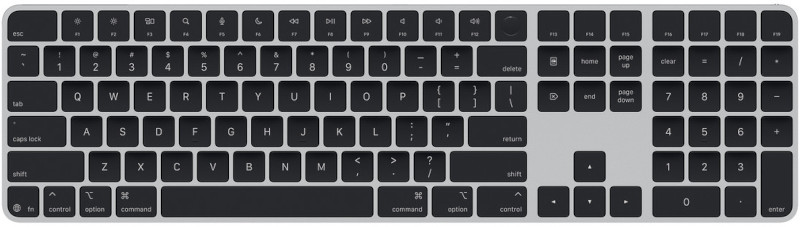
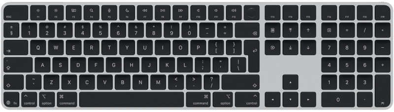
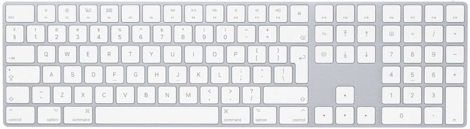
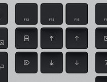

Apple keyboard remapping
I bought an Apple magic keyboard with numeric pad, to pair with my new Mac Mini M4. I felt stupid to purchase the keyboard with keys in black, costing 30 euros more for the sake of it, but I have been using the old good keyboard in white for many many years, and I wanted to have some differentiation. With all my attention focused on the colours, I committed the mistake of requesting the US layout, when all my previous keyboards had the English International layout. I was totally unaware of the small but essential differences between both layouts. This is the US layout:
And this is the English international one.
My muscle memory had a field day trying to hit the ENTER key. After too many backslashes -no pun-, I decided that I should better exchange the keyboard. However, one key still kept me in awed state: the function key. This is the usual layout of an Apple keyboard without Touch Id:
You see, the left bottom corner has control, option, command keys, while the new Touch Id keyboard adds a Function button on the very left corner, which is prime real state! I have a Macbook Pro M3, and the function key is on the same position. Yet I do not press it usually, but with the extended keyboard having almost the same layout as the old one except for this key, I kept pressing it whenever I need the control key. It was driving me mad (mostly, because I still use the older keyboard with other computers).
I wanted to use this left bottom key just as a Control key. This is easy: just go to System Settings / Keyboard / Keyboard shortcuts. Select modifier keys on the left panel, you can set the Globe key as Control function. The problem is, which is then function key? This blog entry gave me a hint to the solution, via this utility page
My keyboard looks like this:
The key under the F13 key has a strange symbol that seems to be a menu key. In fact, it is a contextual menu key, and it is not included in the hidutil generator application linked above. To remap this key (that used to be the function key) to function key, it is needed to do:
hidutil property --set '{"UserKeyMapping":[{"HIDKeyboardModifierMappingSrc":0x700000065,"HIDKeyboardModifierMappingDst":0xFF00000003}]}'
Btw, if this breaks havoc, the return to normality is achieved doing:
hidutil property --set '{"UserKeyMapping":[]}'
Finally, this is just working until the next reboot; to have a persistent change, as the
hidutil utility shows, you need to copy to
~/Library/LaunchAgents/com.local.KeyRemapping.plist the following content:
<?xml version="1.0" encoding="UTF-8"?>
<!DOCTYPE plist PUBLIC "-//Apple//DTD PLIST 1.0//EN" "http://www.apple.com/DTDs/PropertyList-1.0.dtd">
<plist version="1.0">
<dict>
<key>Label</key>
<string>com.local.KeyRemapping</string>
<key>ProgramArguments</key>
<array>
<string>/usr/bin/hidutil</string>
<string>property</string>
<string>--set</string>
<string>{"UserKeyMapping":[
{
"HIDKeyboardModifierMappingSrc": 0x700000065,
"HIDKeyboardModifierMappingDst": 0xFF00000003
}
]}</string>
</array>
<key>RunAtLoad</key>
<true/>
</dict>